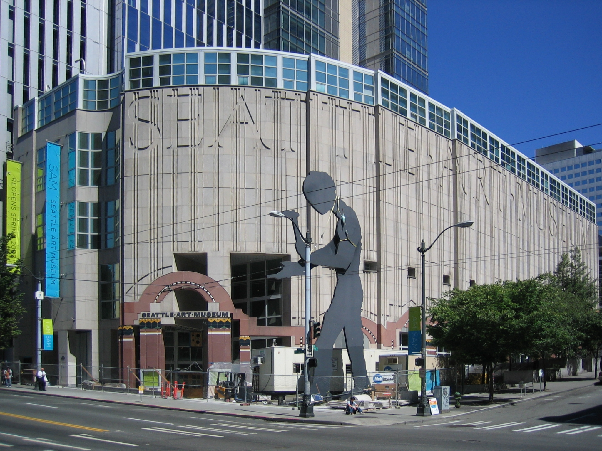
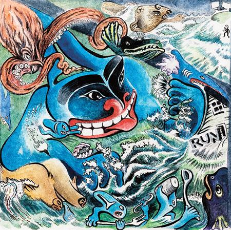

About the Seattle Art Musuem
The Seattle Art Museum is an art museum located in Seattle, Washington. It maintains three major facilities: its main museum in downtown Seattle; the Seattle Asian Art Museum in Volunteer Park on Capitol Hill, and the open Olympic Sculpture Park on the central Seattle waterfront, which opened on January 20, 2007.
SAM has been the center for world-class visual arts in the Pacific Northwest since 1933. Visit SAM to see a museum carved into the city, as much a part of Seattle's landscape and personality as the coffee, rain, mountains, Pike Place Market, and the Space Needle.
Our three distinct locations celebrate the region's position as a crossroads where east meets west, urban meets natural, local meets global. Our collections, installations, special exhibitions, and programs feature art from around the world and build bridges between cultures and centuries.
In the heart of downtown Seattle, light-filled galleries invite you to wander through our collections, temporary installations, and special exhibitions from around the world. Our collections include Asian, African, Ancient American, Ancient Mediterranean, Islamic, European, Oceanic, Asian, American, modern and contemporary art, and decorative arts and design. Visitors especially enjoy our remarkable Native American galleries and our exceptional collection of Australian Aboriginal art.
Current Exhibits
- Blood and Flesh: Italian Masterpieces from the Capadimonte Museum
- Michael Nicoll Yahgulanaas: Carpe Fin
- Lessons from the Institute of Empathy
- American Modernism
- Boundless: Stories of Asian Art
- Aaron Fowler: Into Existence
- Sound Effect
Contact Information
1300 1st Ave
Seattle, WA 98101
(206) 654-3100
Mon - Tues: Closed
Wed - Sun: 10 a.m. - 9 p.m.
Tickets: $12 - $20